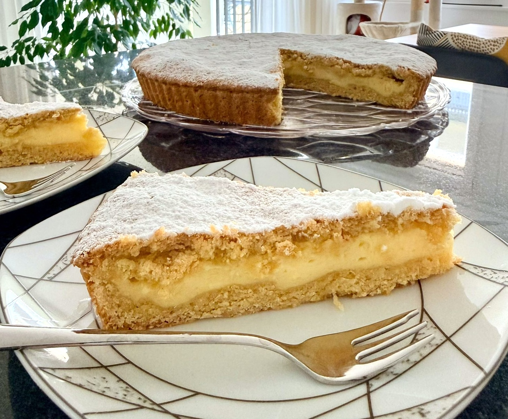
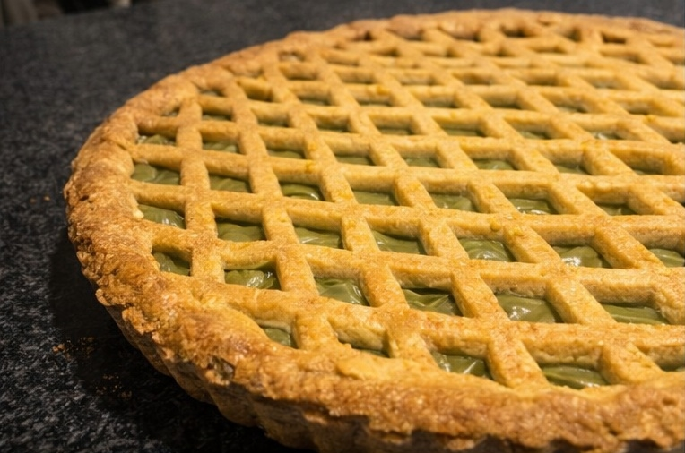
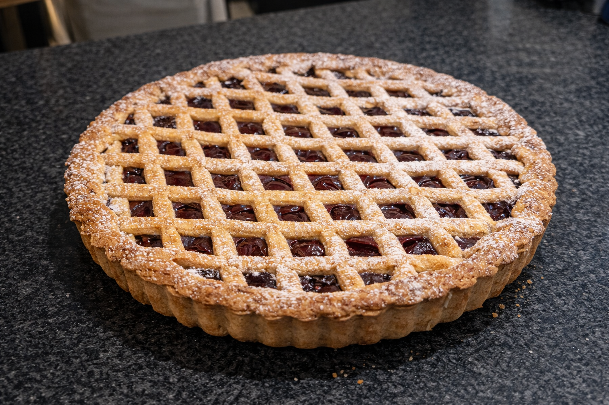

LA STORIA E LA TRADIZIONE
Rossella Ferrara, una donna, una mamma, una gerente gastronomica, con molta esperienza in cucina, ha gestito l’intera cucina del suo ristorante in passato, creando menù interessanti e sfiziosi con ogni tipo di ingrediente, seguendo la sua passione per la cucina tradizionale italiana.
Ed è proprio di questo che stiamo parlando: tradizione.
Sweet Foffy è un progetto di Rossella che ha un concept ben preciso: punta alla commercializzazione in Svizzera di dolci tradizionali italiani a pasta frolla tramite vendita all’ingrosso e al dettaglio. Crostate e bocconotti freschi e fragranti, fatti a mano con metodi tradizionali, ingredienti freschissimi ed esperienza personale notevole, tramandata anche dalle passate generazioni, esattamente “come li faceva la nonna”.
Se il vostro locale gastronomico ha bisogno di un tocco di tradizione, sapori che facciano sentire i propri clienti “a casa propria”, frolle fragranti e gustose con farciture generose e intense, non potete non avere i suoi dolci in vendita!
D’altra parte, Rossella è anche aperta a prenotazioni private, al dettaglio: se volete assaporare anche all’estero la fragranza e la freschezza delle torte che preparava la nonna in Italia, facendovi tornare indietro nel tempo o facendovi scoprire questi sapori, nel caso non li aveste mai provati prima.